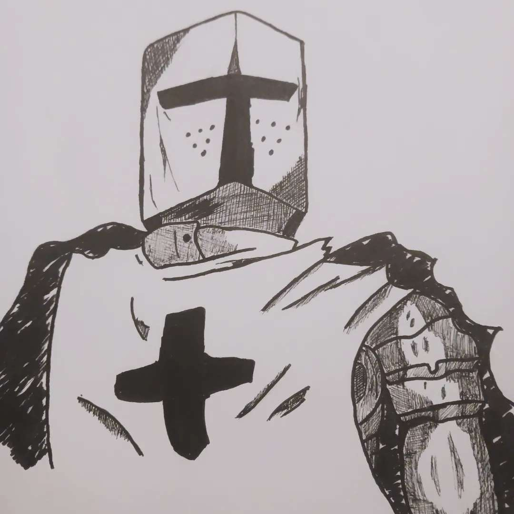
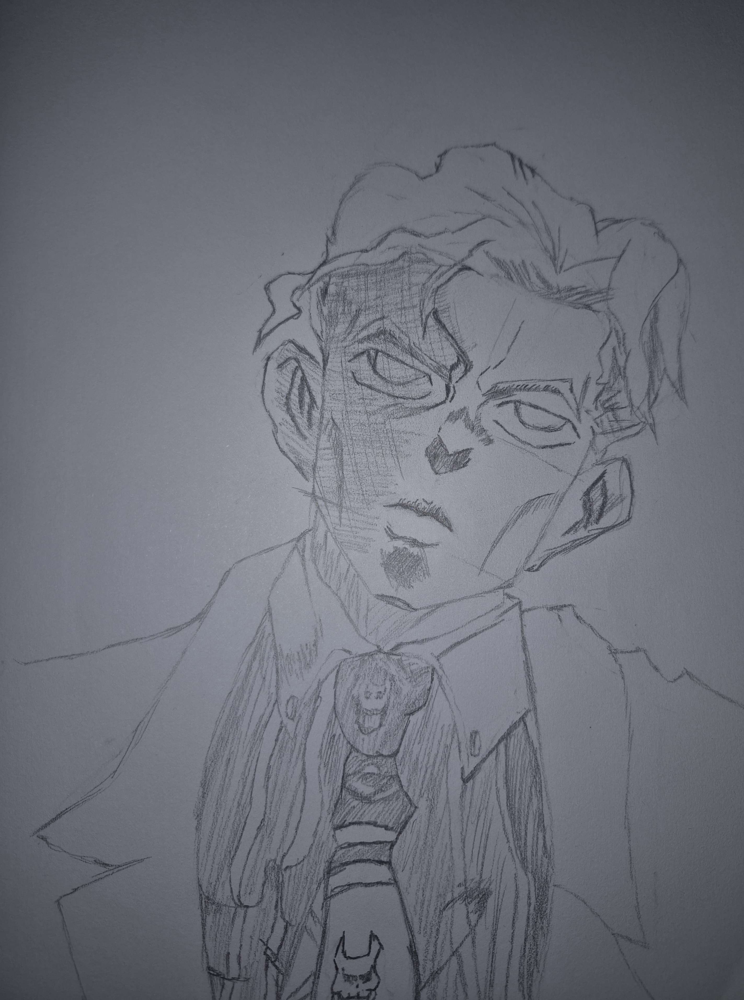
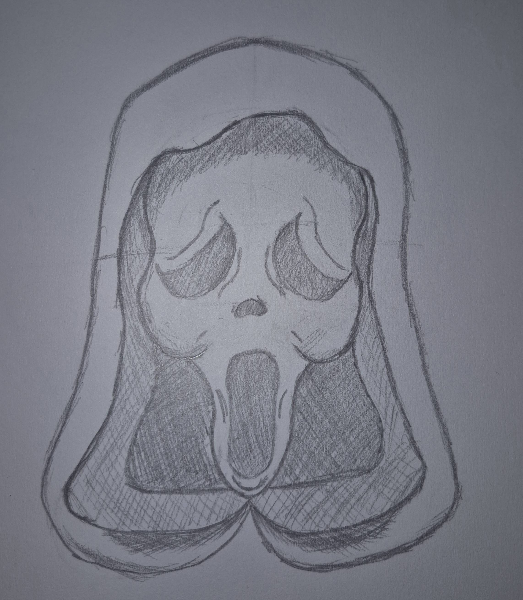
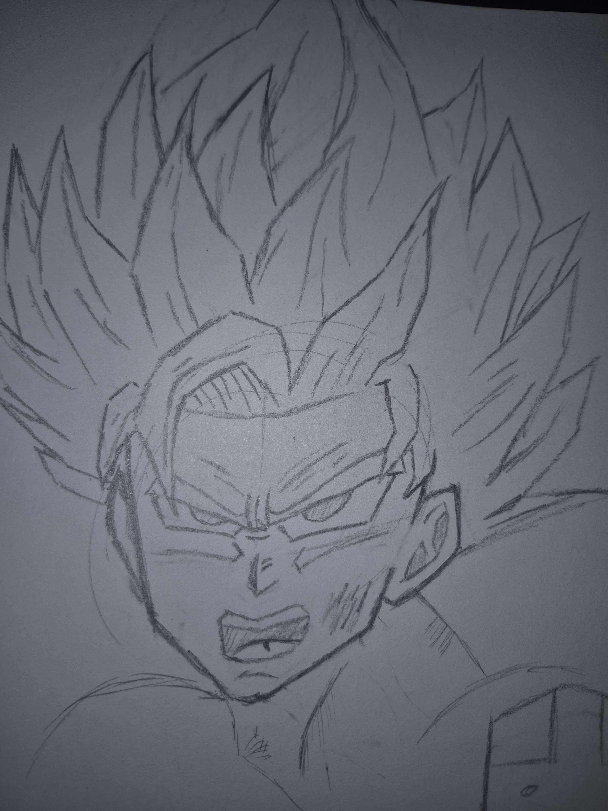
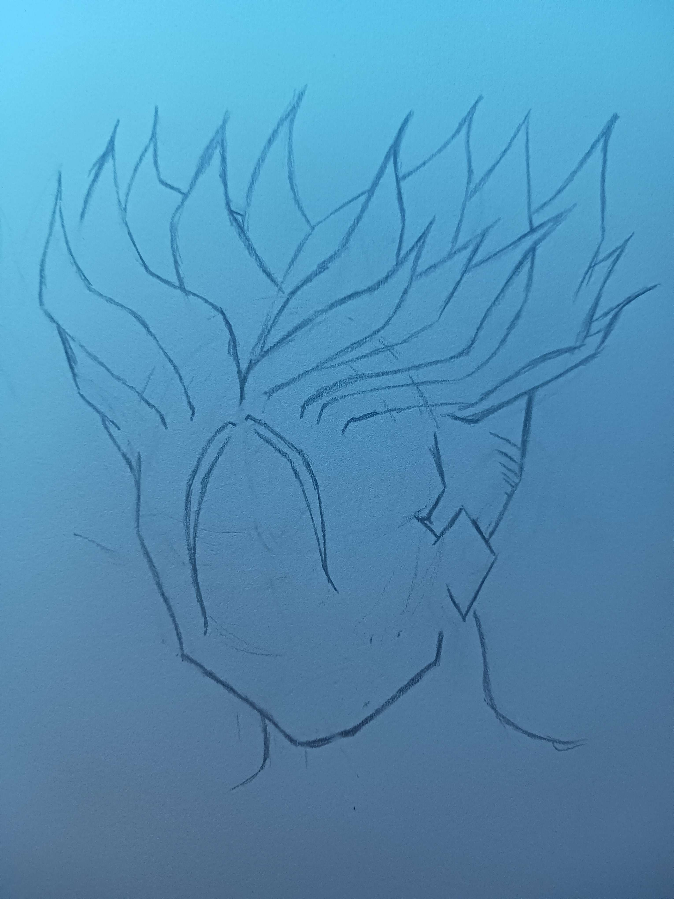
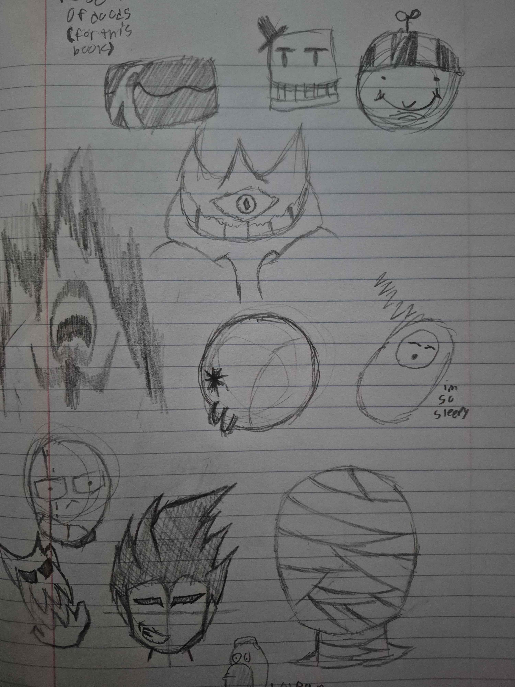

Uhhhhh something about drawing and why i stopped
I used to draw back in middles school all the way to senior year of high school, but after college started I've really slowed down on art. Most recent drawings I've done are in the bottom right (all the doodles.) I still do enjoy art from time to time, but I don't exactly have *time* to draw. It also kinda is a bummer because it reminds me of somebody I used to know.
I think I did really good for what I did. My favorite of this list is the Yoshikage Kira drawing (top middle) because I enjoy it. ¯\_(ツ)_/¯
Maybe in the later projects I can show off my middle school comics and absolutely horrid drawings from then.
     